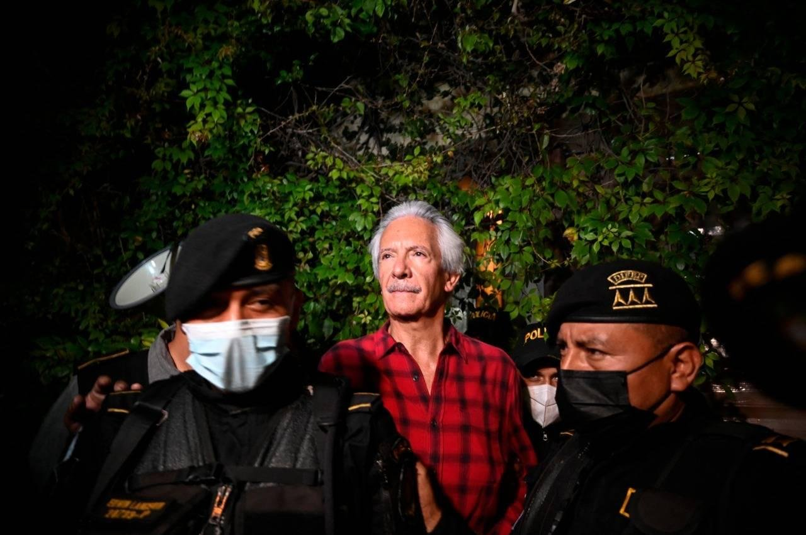
Days of Arbitrary Detention
The founder of elPeriódico, Jose Rubén Zamora, has been arbitrarily detained in Guatemala since July 29, 2002, without evidence or conviction.
The United Nations considers his detention arbitrary and in violation of the Universal Declaration of Human Rights.
His imprisonment has been widely condemned internationally by press freedom and human rights organizations, who see it as retaliation for his reporting on then-President Alejandro Giammattei and Attorney General Consuelo Porras.
His conviction followed a spurious case and a trial plagued by irregularities and violations of due process, including the judge's refusal to admit exculpatory evidence crucial to the defense.
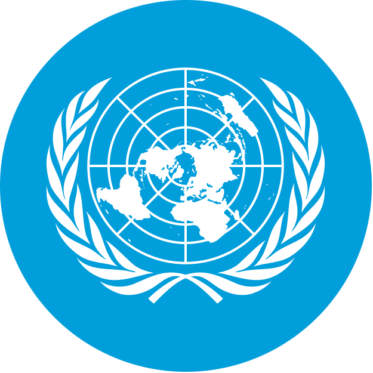
"The most appropriate course of action would be to release Mr. Zamora without delay and to grant him an effective right to compensation and other forms of reparation in accordance with international law."
Grupo de Trabajo sobre la Detención Arbitraria / Naciones Unidas
#FreeZamora
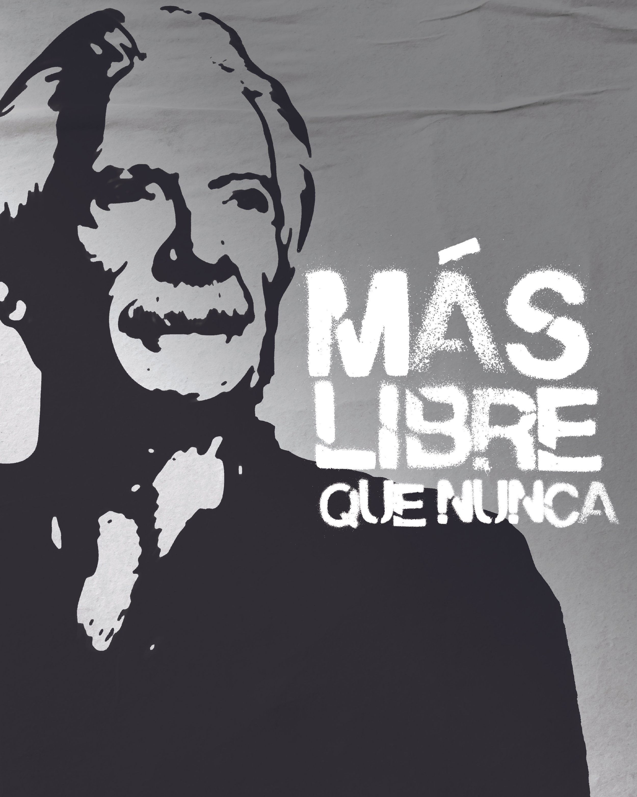
How can you help?
Please help us advocate for Jose Ruben Zamora's release by sharing his story on social media using the hashtags #ZamoraLibre and #FreeZamora.
Suggested messages:
Journalist #JoseRubénZamora has been detained in Guatemala for 730 days, without evidence or conviction. @UNHumanRights has declared his detention arbitrary and in violation of the Universal Declaration of Human Rights. Today is a good day to set him free. #FreeZamora
🚨 We demand the immediate release of journalist #JoseRubénZamora, who has been arbitrarily detained in Guatemala for more than two years. His detention is a clear violation of freedom of expression. #FreeZamora
Journalism is not a crime. The detention of #JoseRubénZamora is a direct attack on freedom of the press. He must be released immediately. #FreeZamora
Journalism is not a crime. #JoseRubénZamora must be released. He is a defender of truth and freedom of expression. #FreeZamora
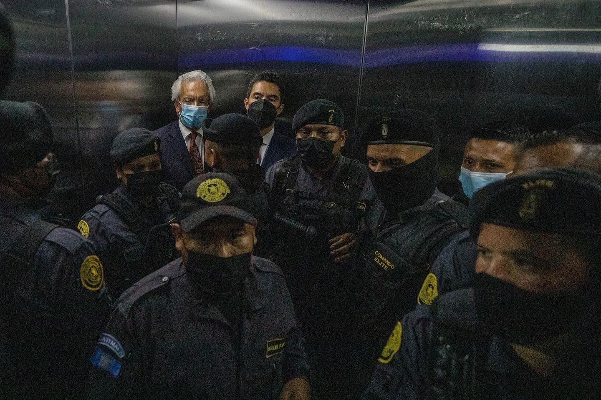
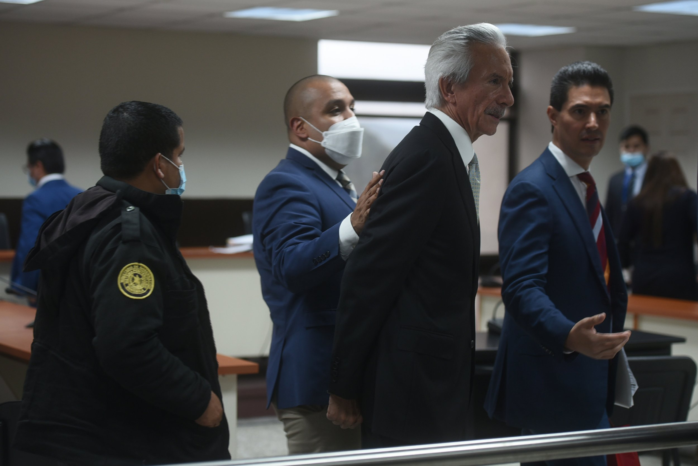
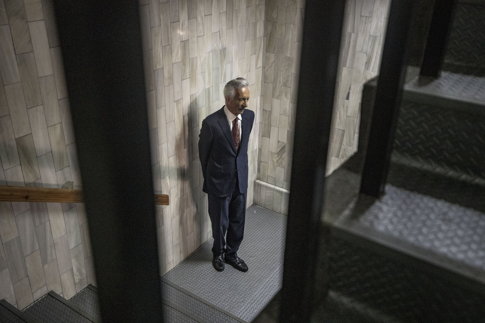
Most recent
July 18, 2024. An urgent appeal was filed with the UN Special Rapporteur on torture and other cruel, inhuman or degrading treatment or punishment. CPJ.
July 1, 2024. The UN declared the detention of Jose Rubén Zamora arbitrary, noted that it contravenes six articles of the Universal Declaration of Human Rights, and called for his immediate release. United Nations. The Vance Center. Medium. El País de España. NBCNews.
May 15, 2024. José Zamora was granted parole, but he was unable to be released from prison because that was only one of three cases that had been opened by the Public Prosecutor's Office.
March 19, 2024. The independent expert, Dr. Carlos Beristain, documented that Zamora has faced torture and inhumane treatment using the Istanbul Protocol.
February 8, 2024. The TrialWatch report noted that the accusations “appear to be in retaliation for his work as an investigative journalist reporting on government corruption.” TrialWatch.
February 5, 2024. The American Bar Association concluded that his trial was “fundamentally unfair” and that he should never have been prosecuted in the first place. American Bar Association. American Bar Association.
October 15, 2023. His sentence was overruled. The retrial was scheduled for February 25, 2024, but the prosecution has done everything possible to maliciously delay the trial.
June 14, 2023. He was sentenced to six years in prison. Prosecutors were asking for a 40-year sentence. The sentence was overruled in 2023.
15 de mayo de 2023. May 15, 2023. elPeriódico stopped publishing online and closed its operations after 26 years due to government pressure. Before the current situation, elPeriódico and José Rubén Zamora had faced more than 190 spurious lawsuits, fiscal terrorism, death threats, illegal raids and kidnapping, and an assassination attempt.
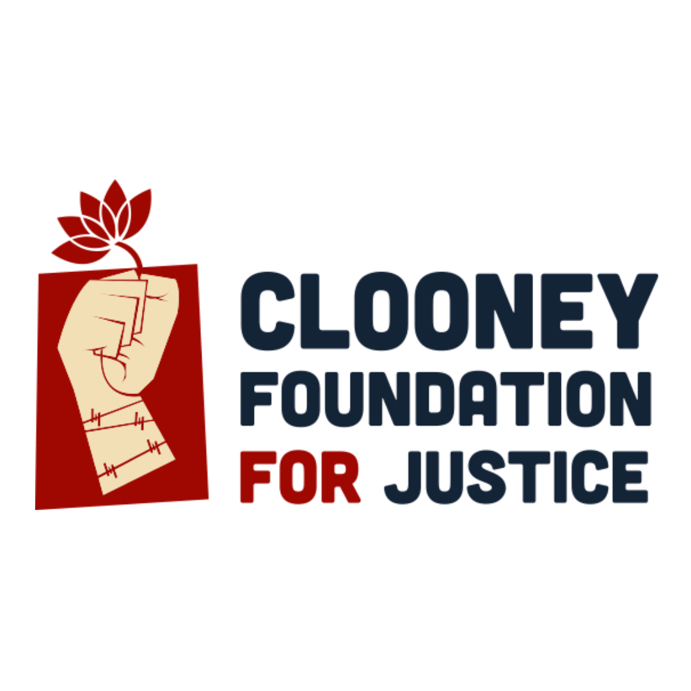
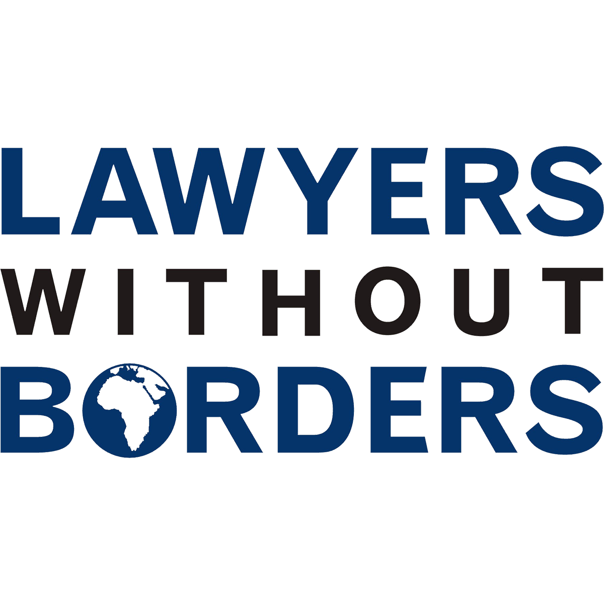
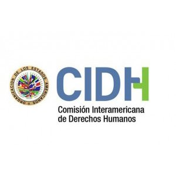
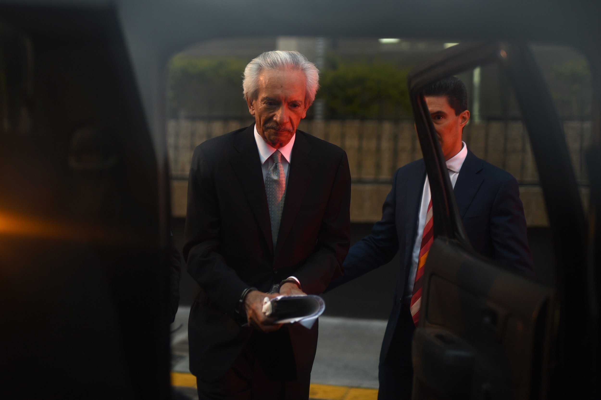
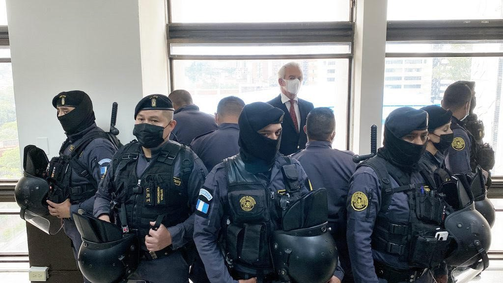
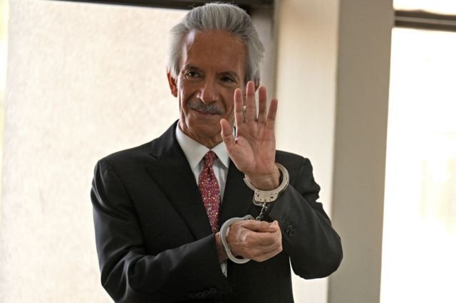
The case against José Rubén Zamora Marroquín
The case against Jose Ruben Zamora was fabricated in 72 hours by a prosecutor that the U.S. State Department has included in its list of corrupt and anti-democratic actors.
To this day, the Attorney General's Office has not presented concrete evidence. Guatemala's attorney general and head of the Public Prosecutor's Office has also been included twice on the U.S. State Department’s list of corrupt and undemocratic actors and is banned from entering 42 countries.
The entire process against Zamora has been an absolute violation of due process, focused on ensuring he was left defenseless. He is accused of crimes that are neither proven nor typified.
The government persecuted his lawyers, imprisoning four of them, forcing Zamora to have ten different lawyers, making it impossible to have a legal strategy and denying his defenders timely access to the case file.
His key witness and evidence was not allowed to be included in the process; his witness was also persecuted.
Two of the charges on which the case was created were dropped, but the court still changed the narrative to convict him, without considering testimony and evidence that could absolve and free him.
Zamora was not allowed to make his closing argument.
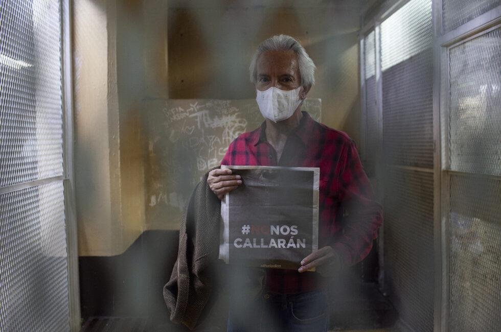
About José Rubén Zamora Marroquín
José Rubén Zamora Marroquín is an industrial engineer, entrepreneur and founder of three Guatemalan newspapers:
Siglo Veintiuno in 1990
elPeriódico de Guatemala in 1996
Nuestro Diario in 1998
Awards and distinctions
The Maria Moors Cabot Prize, Columbia University, New York, October 1992.
International Press Freedom Award, Committee of Protect Journalists, December 1992.
One of the 50 World Press Freedom Heroes of the XX Century, International Press Institute -IPI- Boston, May 2000.
ICFJ Knight International Journalism Award, ICFJ, November, Washington, 2003.
Premio Rey de España, Madrid, June 2021.
Reporters without Borders Prize for Independence, Brussels, Belgium, November 2023.
GABO Excellence Award, Fundación Gabriel García Márquez, May 2024.
About elPeriódico
elPeriódico de Guatemala stood out for its tireless fight against corruption and impunity in the country. For more than 25 years, it defended freedom of expression, pluralism, public debate, tolerance, the rule of law, transparency, human rights, inclusion and democracy. Its investigative work revealed abuses of power and corruption among Guatemala's political and economic leaders, who often favor authoritarianism and monopolies. It also played a crucial role in denouncing and exposing the links between organized crime and the government.
At the time of Zamora's arrest, elPeriódico had published stories pointing to 144 cases of corruption during the administration of then-President Eduardo Giammattei. Some of the most notorious involved corruption in purchasing vaccines for COVID-19 and bribes to Guatemalan officials doing business with Russian miners.
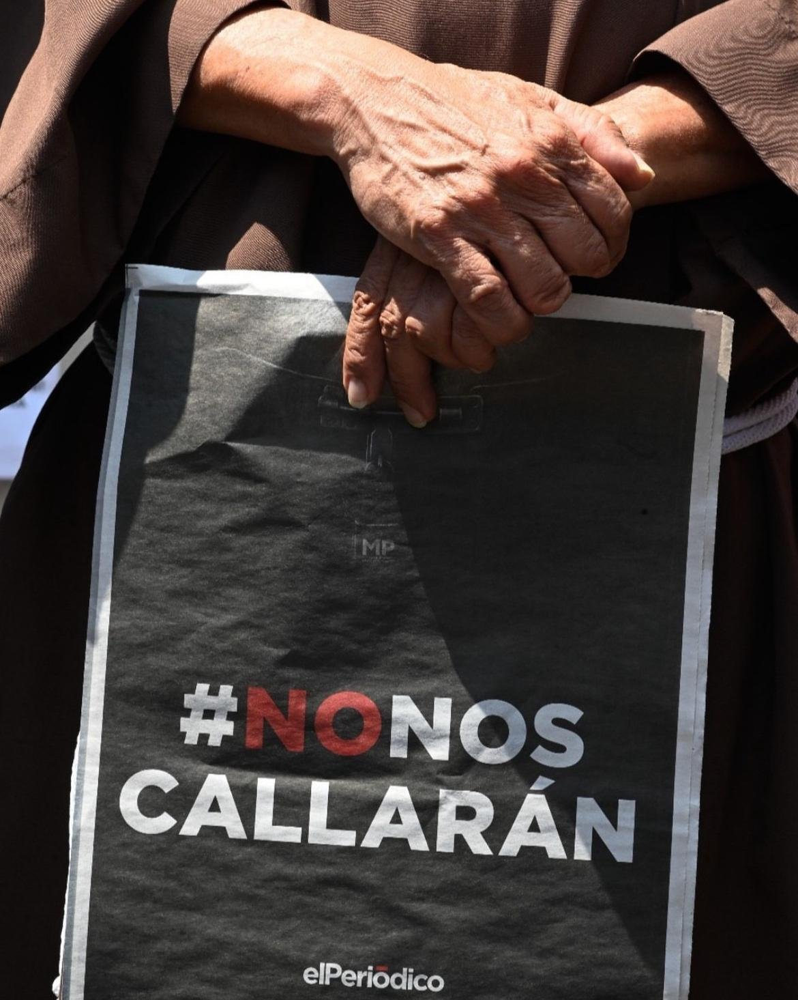